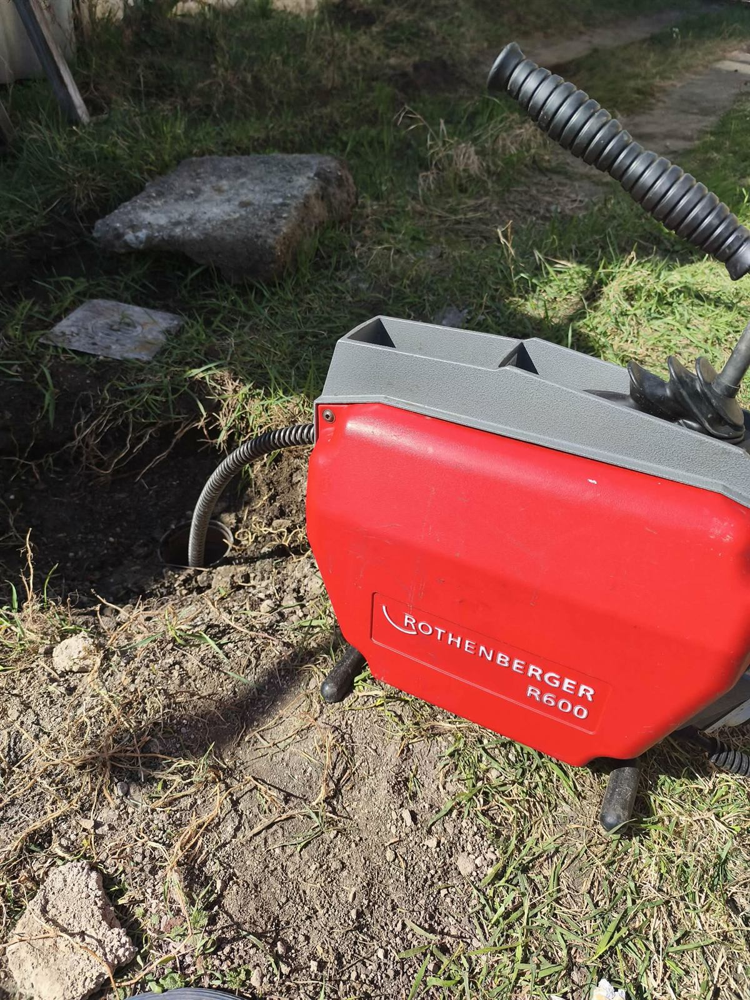

Eger
A megyeszékhelyen a belvárosi társasházaktól a családi házas övezetekig minden dugulástípusra kimegyek, gyors kiérkezéssel.
Eger a bázisom, de Heves megye városaiba és falvaiba is kimegyek: Füzesabonytól Bélapátfalván át Pétervásáráig. A 40 km-es körzetben kiszállási díjat nem számítok fel, így Ön ugyanazt a gyors, korrekt szolgáltatást kapja, mint a megyeszékhelyen.
Az alábbi településeken rendszeresen végzek duguláselhárítást és csatornatisztítást. Ha az Ön faluja nincs a felsorolásban, hívjon – jó eséllyel oda is ki tudok menni.
A megyeszékhelyen a belvárosi társasházaktól a családi házas övezetekig minden dugulástípusra kimegyek, gyors kiérkezéssel.
Nyaralók, vendégházak és lakóingatlanok lefolyó- és csatornagondjait is megoldom, akár hétvégén is.
Családi házas dugulások, udvari szennyvízvezetékek és aknák tisztítása helyben, díjmentes kiszállással.
A hegyvidéki településen a kültéri elvezetések, ereszcsatornák és gerincvezetékek karbantartásában is segítek.
Lakóházak WC-, mosdó- és konyhai lefolyódugulásainak gyors, bontás nélküli megszüntetése.
Vendégházak és lakóingatlanok csatornatisztítása, visszatérő dugulások alapos átmosása.
Fürdőfalu ingatlanjainál is számíthat rám a lefolyók és a szennyvízvezetékek karbantartásában.
Háztartási és kültéri dugulások megszüntetése, gépi spirál és magasnyomású mosás igény szerint.
A vasúti csomópont városában társasházi és családi házas dugulásoknál egyaránt számíthat rám, a gerincvezetéktől a konyhai lefolyóig.
A Bükk lábánál fekvő kisvárosban és környékén vállalom a lefolyók, ejtővezetékek és udvari csatornák tisztítását, bontás nélkül.
A Mátra és a Bükk közti térség központjában is elérhető vagyok. A távolság ellenére a kiszállás itt is a megbeszélt időben történik.
A Tarna-menti borvidék városában lakóházak és pincészetek lefolyórendszereinél is segítek, gépi spirállal vagy magasnyomású mosással.
A Mátra keleti oldalán fekvő településekre is rendszeresen járok. Hétvégén is hívható vagyok, ha sürgős a baj.
A 25-ös főút menti falvakban gyors a kiérkezés, a dugulás megszüntetése a legtöbb esetben egyetlen alkalommal megoldható.
A kisebb községekbe is kimegyek. Egy hívás, és megbeszéljük az időpontot és az árat.

Nem számít, hogy Egerben, Füzesabonyban vagy egy kisebb faluban van a dugulás – ugyanazzal a profi géppel és tapasztalattal érkezem. A kültéri aknáktól a belső lefolyókig a legtöbb esetben bontás nélkül oldom meg a problémát.
A távolabbi településeken is a megbeszélt időben vagyok ott, és a munka végén leellenőrzöm, hogy minden akadálytalanul folyik-e.
Kérek egy időpontotA körzetem folyamatosan bővül. Ha bizonytalan, hívjon, és megmondom, ki tudok-e menni Önhöz és milyen feltételekkel. Nézze meg a tájékoztató árakat, vagy írjon a kapcsolat oldalon.
Megbeszéljük, mikor tudok menni és mennyibe kerül – kiszállási díj nélkül a 40 km-es körzetben.